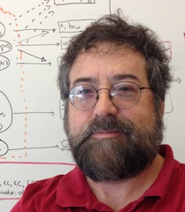

|  |
William W. CohenVisiting Professor, Bio |
Announcements and FAQs |
Teaching |
Publications (recent, all) |
Software |
Datasets |
Talks |
Students & Colleagues |
Other Stuff
]
Prospective visitors/students: see announcements
| |
Dr. Cohen is a past president of the International Machine Learning Society. In the past he has also served as an action editor for the the AI and Machine Learning series of books published by Morgan Claypool, for the journal Machine Learning, the journal Artificial Intelligence, the Journal of Machine Learning Research, and the Journal of Artificial Intelligence Research. He was General Chair for the 2008 International Machine Learning Conference, held July 6-9 at the University of Helsinki, in Finland; Program Co-Chair of the 2006 International Machine Learning Conference; and Co-Chair of the 1994 International Machine Learning Conference. Dr. Cohen was also the co-Chair for the 3rd Int'l AAAI Conference on Weblogs and Social Media, which was held May 17-20, 2009 in San Jose, and was the co-Program Chair for the 4rd Int'l AAAI Conference on Weblogs and Social Media. He is a AAAI Fellow, and was a winner of the 2008 the SIGMOD "Test of Time" Award for the most influential SIGMOD paper of 1998, the 2014 SIGIR "Test of Time" Award for the most influential SIGIR paper of 2002-2004, and the 2023 Semantic Web Science Association's Ten-Year Award for the most influential paper of the ISWC-2013 conference.
Dr. Cohen's research interests include include question answering, machine learning for NLP tasks, and neuro-symbolic reasoning, and he has a long-standing interest in statistical relational learning. He holds seven patents related to learning, discovery, information retrieval, and data integration, and is the author of more than 300 publications.
Former students/colleagues:
I am currently a PhD committee member for Vidhisha Balachandran, Zhengbo Jiang, Luyu Gao, and Sankey Vaibhav Mehta.
For those many friends whose research I have built on, be warned. My full name, "William Weston Cohen", is an anagram of the phrase "I now cite shallow men". (From Sara Cohen - no relation! - comes this warning: "Women's rights activists would probably request you to use the following anagram instead: 'I shall now cite women'".)
Through my advisor, Alex Borgida, I can trace my "academic lineage" back to luminaries like Leibniz, Newton and Alfred Whitehead. Update: My former student Andrew Arnold has gone back even further, to Galileo!
In 2014 I unearthed a strange relic from the past, a sort of game/website I wrote for my son Charlie back in...I'm gonna say, 1994, 1995, something like that, and I sort of made it work again, although JavaScript has changed a bit in the last couple of decades. (The main bugs have to do with sound-file presentation - in 1994 these were played by mime-file configured helper programs, not natively by the browser, so now you need to hit 'back' about 1/2 the time after a sound plays.) Historically interesting? You decide!
{kind=link}